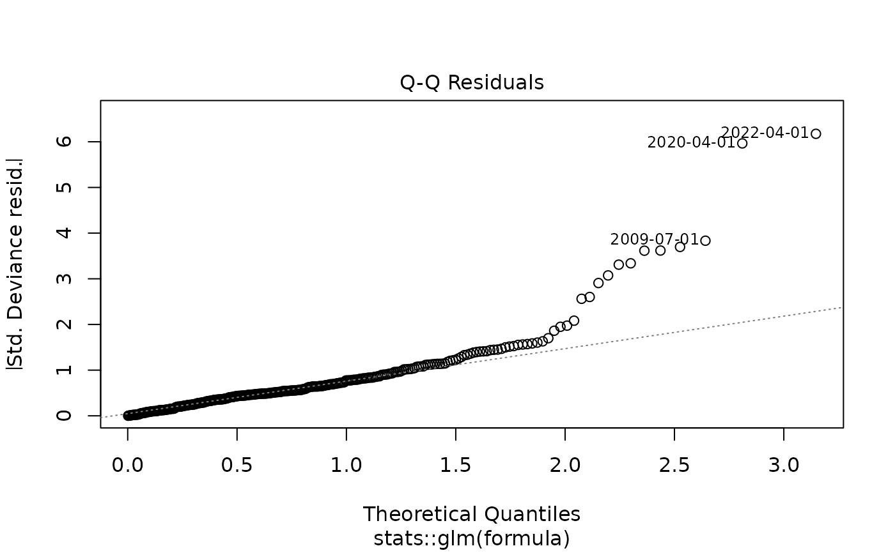
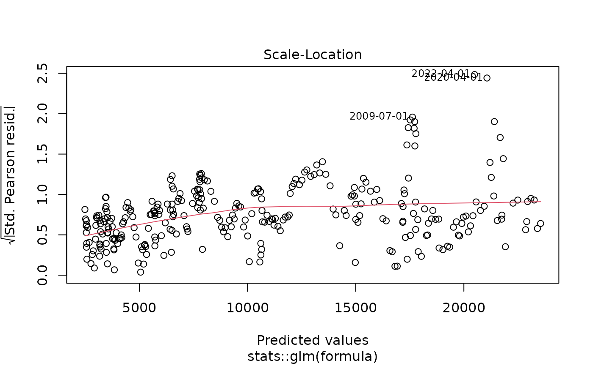
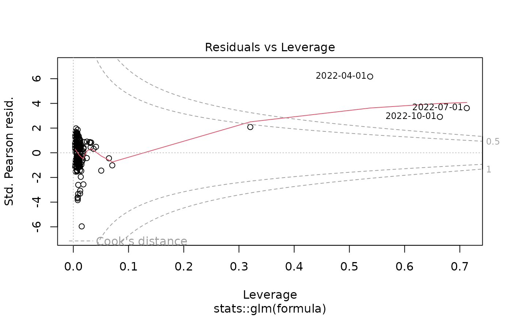
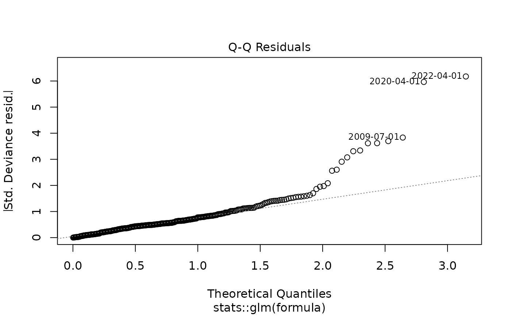
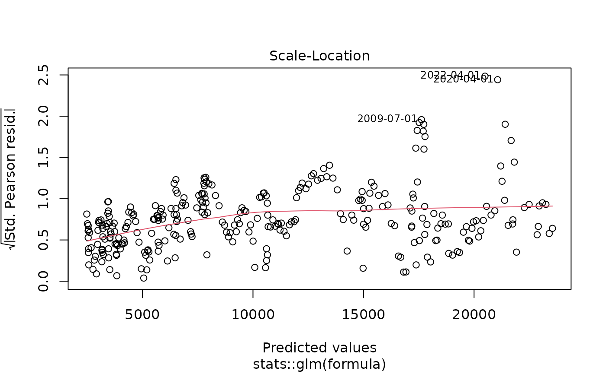
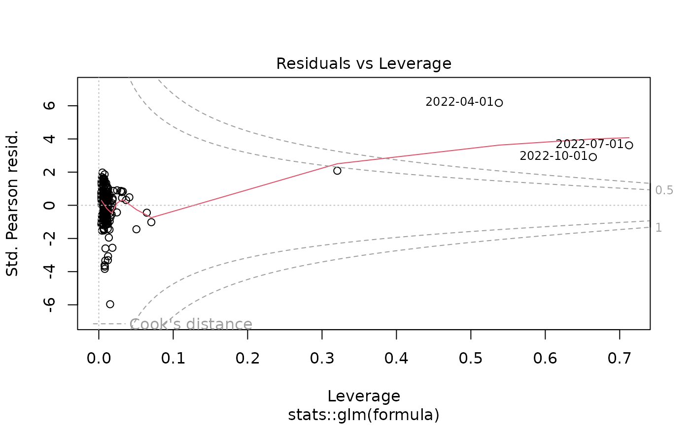

yth_glm fits a generalized linear model suggested by James D. Hamilton
as a better alternative to the Hodrick-Prescott Filter.
yth_glm(x, h = 8, p = 4, ...)Arguments
- x
A univariate
xtsobject of anyzooindex class, such asDate,yearmon, oryearqtr. For converting objects of typetimeSeries,ts,irts,fts,matrix,data.frame, orzootoxts, please seeas.xts.- h
An
integer, defining the lookahead period. Defaults toh = 8, suggested by Hamilton. The default assumes economic data of quarterly periodicity with a lookahead period of 2 years. This function is not limited by the default parameter, and econometricians may change it as required.- p
An
integer, indicating the number of lags. A default ofp = 4, suggested by Hamilton, assumes data is of quarterly periodicity. If data is monthly, one may choosep = 12or aggregate the series to quarterly and maintain the default. Econometricians should use this parameter to accommodate the seasonality of their data.- ...
Additional arguments passed to
glm.
Details
For time series of quarterly periodicity, Hamilton suggests parameters of h = 8 and p = 4, or an \(AR(4)\) process, additionally lagged by \(8\) lookahead periods. Econometricians may explore variations of h. However, p is designed to correspond with the seasonality of a given periodicity and should be matched accordingly.
References
James D. Hamilton. Why You Should Never Use the Hodrick-Prescott Filter. NBER Working Paper No. 23429, Issued in May 2017.
Examples
data(GDPC1)
gdp_model <- yth_glm(GDPC1, h = 8, p = 4, family = gaussian)
summary(gdp_model)
#>
#> Call:
#> stats::glm(formula = formula, family = ..1, data = data)
#>
#> Coefficients:
#> Estimate Std. Error t value Pr(>|t|)
#> (Intercept) 240.34971 37.58179 6.395 6.48e-10 ***
#> xt_0 0.65131 0.13544 4.809 2.46e-06 ***
#> xt_1 -0.03052 0.19372 -0.158 0.875
#> xt_2 0.53691 0.41206 1.303 0.194
#> xt_3 -0.12651 0.30599 -0.413 0.680
#> ---
#> Signif. codes: 0 ‘***’ 0.001 ‘**’ 0.01 ‘*’ 0.05 ‘.’ 0.1 ‘ ’ 1
#>
#> (Dispersion parameter for gaussian family taken to be 100491.5)
#>
#> Null deviance: 8377925761 on 291 degrees of freedom
#> Residual deviance: 28841063 on 287 degrees of freedom
#> (11 observations deleted due to missingness)
#> AIC: 4198.8
#>
#> Number of Fisher Scoring iterations: 2
#>
plot(gdp_model)
 




